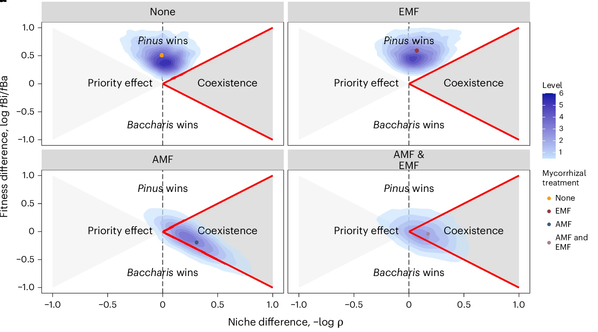
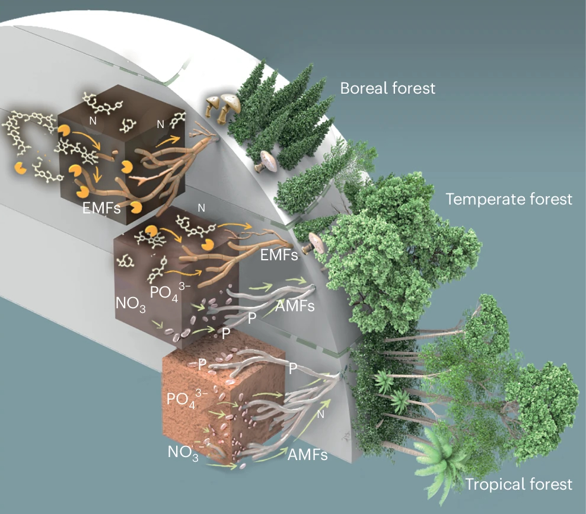
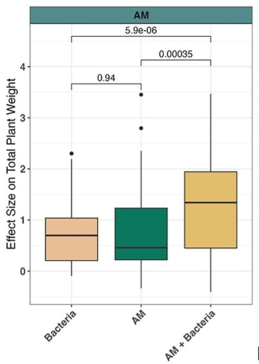
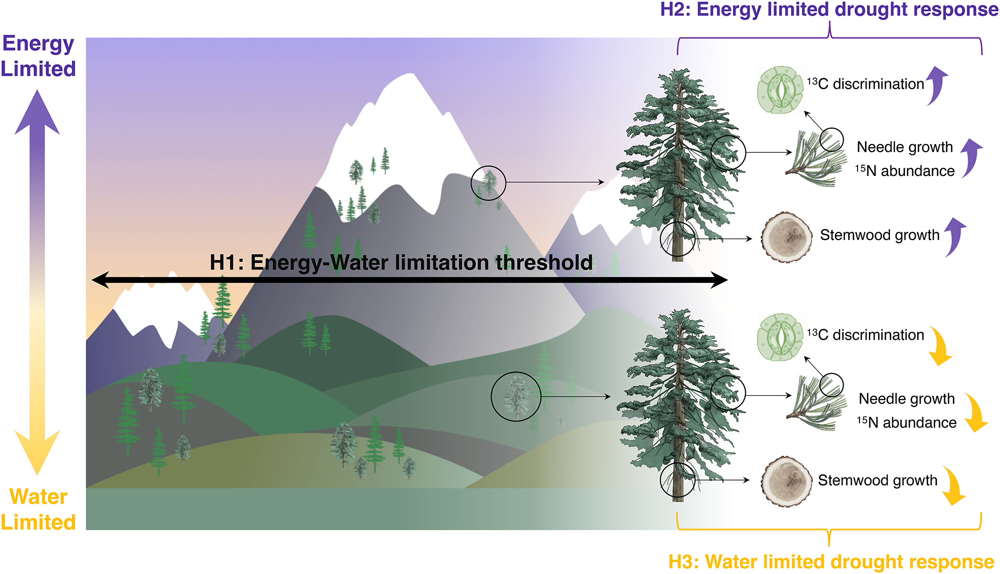
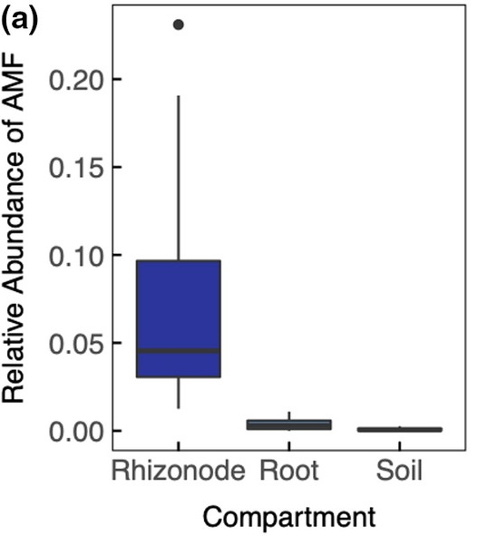
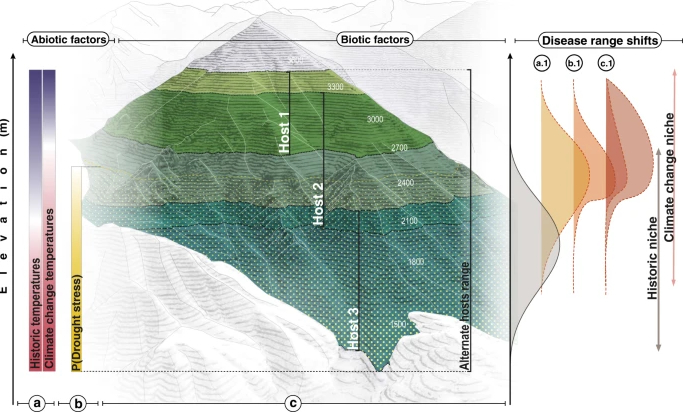
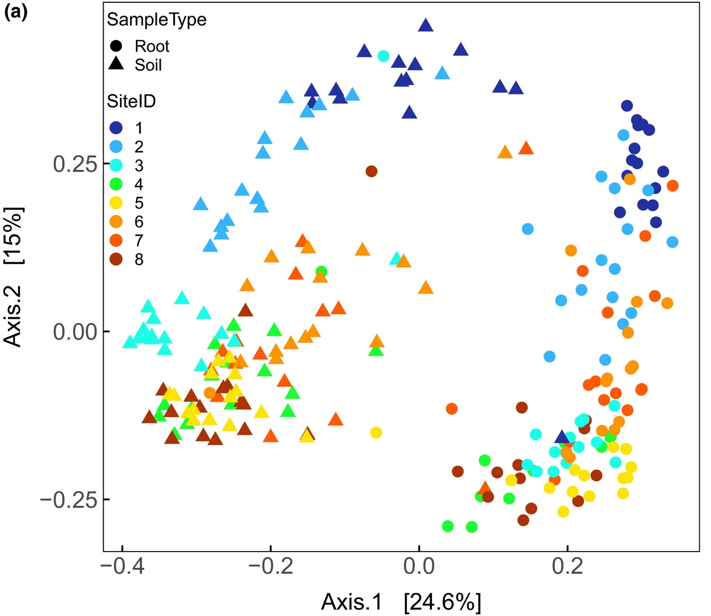
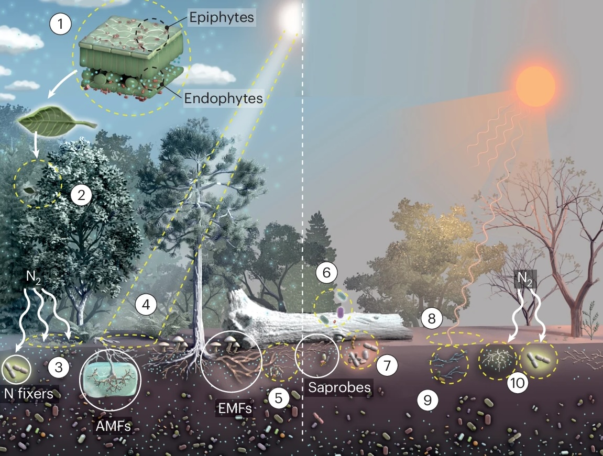
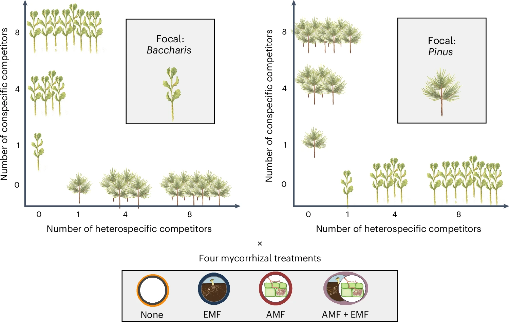

School of Environmental & Forest Sciences University of Washington
Exploring the fungal foundations of forests to support climate adaptation from the ground up.
Selected Publications
For a more complete list of publications, check out

Willing, C. E., Wan, J., Yeam, J. J., Cesna, A. M., & Peay, K. G. (2024). Arbuscular mycorrhizal fungi equalize differences in plant fitness and facilitate plant species coexistence through niche differentiation. Nature Ecology & Evolution, 8(11), 2058–2071. doi.org/10.1038/s41559-024-02526-1

Willing, C. E., Pellitier, P. T., Van Nuland, M. E., Alvarez-Manjarrez, J., Berrios, L., Chin, K. N., Villa, L. M., Yeam, J. J., Bourque, S. D., Tripp, W., Leshyk, V. O., & Peay, K. G. (2024). A risk assessment framework for the future of forest microbiomes in a changing climate. Nature Climate Change, 14(5), 448-461. doi.org/10.1038/s41558-024-02000-7

Berrios, L., Venturini, A. M., Ansell, T. B., Tok, E., Johnson, W., Willing, C. E., & Peay, K. G. (2024). Co-inoculations of bacteria and mycorrhizal fungi often drive additive plant growth responses. ISME Communications, 4(1), ycae104. doi.org/10.1093/ismeco/ycae104

Dudney, J., Latimer, A. M., van Mantgem, P., Zald, H., Willing, C. E., Nesmith, J. C. B., Cribbs, J., & Milano, E. (2023). The energy‐water limitation threshold explains divergent drought responses in tree growth, needle length, and stable isotope ratios. Global Change Biology, 29(12), 3779-3790. doi.org/10.1111/gcb.16740

Willing, C. E., Pierroz, G., Guzman, A., Anderegg, L. D. L., Gao, C., Coleman-Derr, D., Taylor, J. W., Bruns, T. D., & Dawson, T. E. (2021). Keep your friends close: Host compartmentalisation of microbial communities facilitates decoupling from effects of habitat fragmentation. Ecology Letters, 24(12), 2674-2686. doi.org/10.1111/ele.13886

Dudney, J., Willing, C. E., Das, A. J., Latimer, A. M., Nesmith, J. C. B., & Battles, J. J. (2021). Nonlinear shifts in infectious rust disease due to climate change. Nature Communications, 12(1), 5102. doi.org/10.1038/s41467-021-25182-6

Willing, C. E., Pierroz, G., Coleman-Derr, D., & Dawson, T. E. (2020). The generalizability of water‐deficit on bacterial community composition; Site‐specific water‐availability predicts the bacterial community associated with coast redwood roots. Molecular Ecology, 29(23), 4721-4734. doi.org/10.1111/mec.15666
Research
Plant microbiomes and global change

The first major goal of our research is to characterize and quantify the impact of global change on
plant-associated microbial communities. While next-generation sequencing has revolutionized our
understanding of plant-microbe interactions, there remain critical gaps in understanding how
microbiomes might respond to global change. The long-term goal of this research is to understand how
pulse disturbances like fire and drought impact the distributions of key microbes. Given the
orders-of-magnitude differences between tree and microbial lifespans, differing rates of adaptation
and recovery could cause spatio-temporal mismatches between plant and microbe partners. For
instance, it is unclear how rapidly microbial communities may adapt, acclimate, or recover from
increased frequency of pulse disturbances.
Microbial underpinnings of plant community ecology

Taking the information that we learn about the impact of global change on microbial distributions, the second major axis of our research
program is to understand how the presence of key microbes mediates plant species assembly,
especially following severe pulse disturbances. The factors which determine species coexistence and
maintain diversity in terrestrial systems is a central question in ecology. One provocative idea is
that symbiotic mutualisms control vegetation structure. Leveraging models based on the modern
coexistence framework, our research investigates the role of root-associated microbial communities
on the resistance and resilience of forest communities to climate change. As climate change poses
new challenges for ecosystems, our research will illustrates how microbes influence processes of
landscape-scale resistance and resilience.
Microbial drivers of plant physiological ecology
Using the information that we gain from testing the role of microbes on vegetation dynamics,
the last goal of our research program is to determine the role of microbial communities in the
physiological resistance of plants to climate change. For instance, AMF are thought to improve plant
drought tolerance, yet few studies have demonstrated the potential mechanisms by which drought
tolerance could be conferred. Pathogenic microbes may also influence plant ecophysiological
responses to climate change. The long-term goal for this component of our research is to determine
the role of microbes in the resistance of trees to climate change. Microbiomes are implicitly
included in current measurements of plant response to environmental change; however, our predictions
are critically limited as it is unclear how much of this variation is driven by microbial
interactions or how these interactions might shift with increasing frequency or severity of
disturbance. Our research utilizes classical ecophysiological techniques such as stomatal gas
exchange and stable isotope ecology to explore novel questions about the role of microbiomes in
determining ecophysiological responses of plants to environmental stress.
Dr. Claire Willing leads the Forest Mycobiome Lab, focusing on fungal ecology, plant ecophysiology, and plant-fungal interactions under climate change. Her work is focused on how root-associated microbes influence ecosystem resistance and resilience in response to environmental disturbance.
Outside of the lab, Claire loves to play soccer, hike, backpack, and spend time with her family and her dog Tepe.
Suvi is an M.S. student in the lab who's research is focused on utilizing microbial innoculations to improve post-fire regeneration success of giant sequoia seedlings. She is passionate about creating programs to help more Black students enter the field of environmental science, just like the ones that helped her.
Outside of campus, you can find Suvi hiking, crocheting, admiring trees, or reading with a cup of hot tea on a rainy Seattle afternoon.
Mira Ranganath is Ph.D student in the lab whose research is focused on fungal adapation to fire and the role of fire-loving "pyrophilous" fungi in seedling regeneration, especially in forests where seedling establishment is impacted by post-fire drought.
Her ideal evening is spent cooking with her partner, listening to jazz records, and watching queer films.
Sarah is a PhD student in the lab whose research is focused on understanding the impacts of climate-induced range shift on mycorrhizal community structure and function. Sarah also holds a M.A. in Museum Studies and has a keen interest in biological collections as references for biodiversity and global change.
Outside the lab, Sarah's favorite hobby is picking up new hobbies—currently they are experimenting with homebrewing cider, fiber arts, sewing cat jackets, and some simple wood carving.
As a lab technician extraordinaire, Ellie led research on fungal diversity across forest stand ages and contributed to several projects in the lab. Now a Fulbright Scholar in New Zealand, Ellie is investigating how fungal endophytes can help mitigate the spread of Kauri Dieback.
An amazing lab manager, Liv was instrumental in establishing the lab. Their work spans studying post-fire fungi's soil-stabilizing properties and creating a digital repository for mycological archives. Liv is also very active in serveral amateur mycology groups, serving on the Vouchering and Marketing committees for the North American Mycological Society.
Please get in touch if you are interested in collaboratively developing a proposal for a research grant or fellowship. There are many funding opportunities such as the Washington Research Fellows, NSF Postdoctoral Research Fellowships in Biology, Smith Fellowship for postdocs, and Fulbright Scholars for international collaborators. Writing a proposal and funding your postdoctoral research is a fantastic way to increase your competitiveness on the job market.
Graduate Students
Graduate students can join our group through the UW School of Environmental and Forest Sciences (MS or PhD). Funding is usually my limiting factor in taking graduate students, so consideration of potential funding sources will be an important part of your application.
2024 Update
I currently have no funded grants to support new students, so I am unlikely to admit a student without external funding. Competitive students interested in applying for external fellowships should reach out to me through this interest form.
Information about Applying to Our Graduate Program
Requirements
Our MS program averages 2 years and our PhD program averages 5-6 years to graduation. MS students should aim for 1-2 publications by the end of their second year, and a Ph.D. dissertation typically consists of about 3 scientific papers. Program requirements can be found here. To apply for a PhD, an MS is required first, but students can transition directly from MS to PhD upon good standing.
Funding
There are four main options for funding tuition and stipend:
External Fellowships: NSF GRFP (for students without an MS), and other potential funding options.
Internal Fellowships: Available through university departments and the larger university.
Research Assistantships (RAships): Funded by advisor grants, subject to grant availability.
Teaching Assistantships (TAships): Limited and not guaranteed but provide teaching experience.
Potential Committee Members
Identifying potential committee members within SEFS and UW is important for your graduate program. Your application should include at least two SEFS faculty members as potential committee members.
My Search Criteria
Research Fit: Alignment with lab research, contributions to diversity, and commitment to mentorship.
Character: Self-directed individuals who can formulate scientific questions and overcome challenges.
Previous Experience: Exposure to various aspects of research such as experimental design, data analysis, and writing.
Undergraduate Students
If you are interested in forest ecology and would like to join our lab group for undergraduate research experience, please fill out this interest survey. SEFS undergraduates can also explore the Senior Capstone as an option.